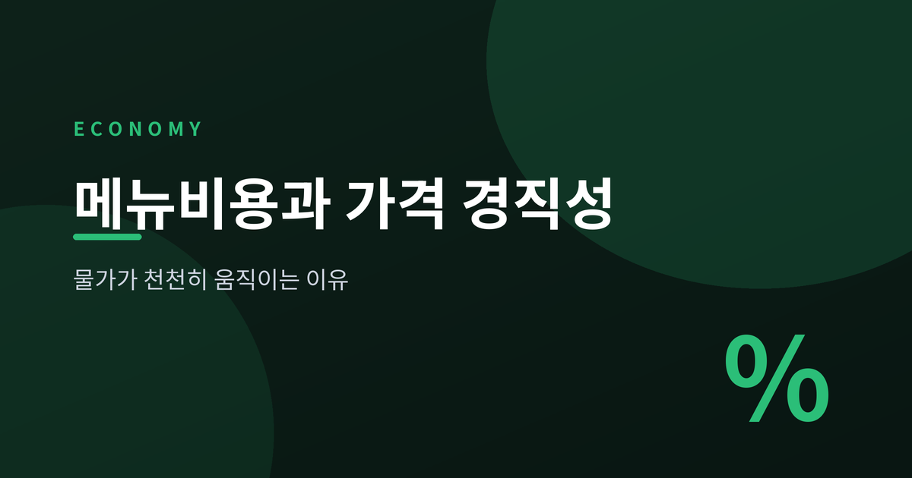
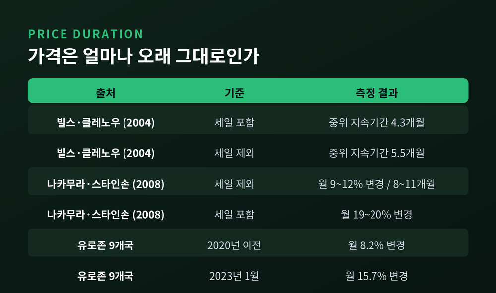
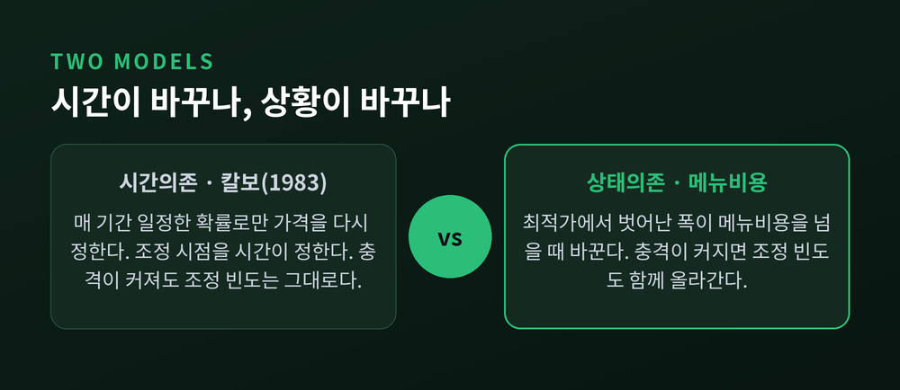
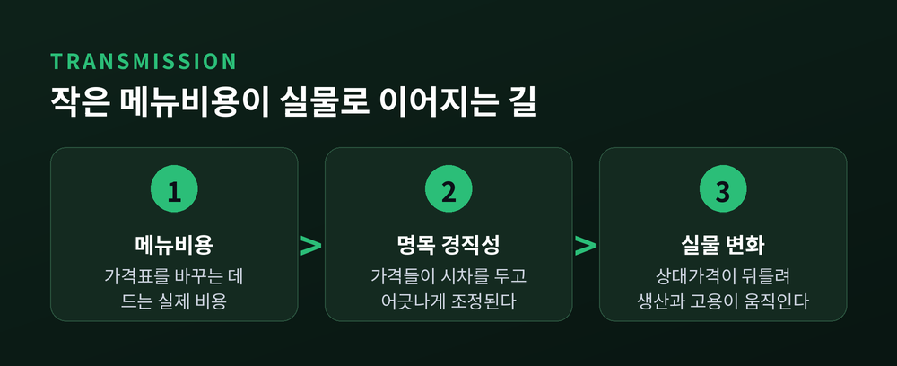
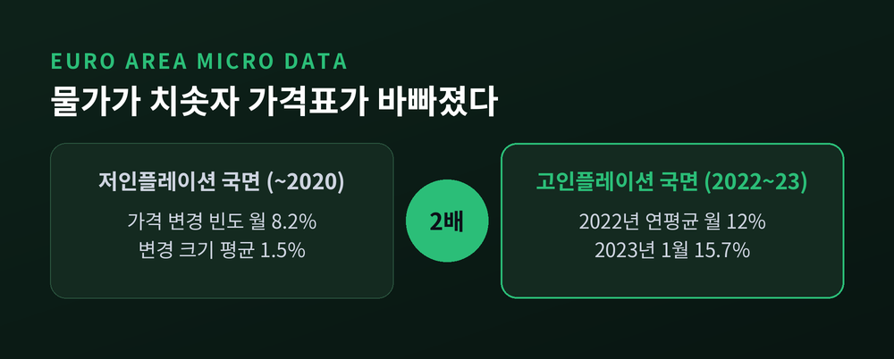
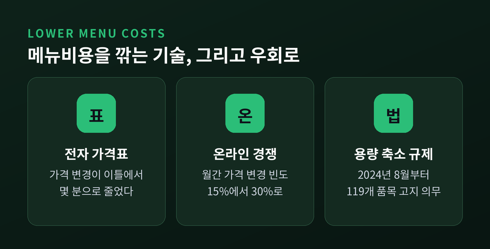

이번 글에서는 메뉴비용과 가격 경직성을 정리해 보겠습니다. 원재료 값이 올랐다는 뉴스는 오늘 나오는데, 정작 계산대의 가격표는 몇 달 뒤에야 바뀝니다. 그 시차가 어디서 생기는지, 경제학이 찾아낸 답을 따라가 봅니다.
메뉴비용은 말 그대로 식당이 메뉴판을 다시 찍는 비용에서 나온 말입니다. 가격을 바꾸는 행위 자체에 드는 비용을 가리킵니다.
인쇄비 몇 푼이 무슨 대수냐고 여기기 쉽습니다. 그런데 실제로 재어 본 연구가 있습니다.
레비, 버건, 두타, 베너블은 1997년 미국 대형 슈퍼마켓 체인 다섯 곳의 점포 자료를 직접 들여다봤습니다. 가격 하나를 바꾸는 데 어떤 절차가 필요한지 단계별로 따라간 연구였습니다.
결과는 이렇습니다. 점포 한 곳이 가격 변경에 쓰는 돈이 연간 약 10만 5,887달러. 매출액의 0.70%입니다. 가격 한 건당으로 환산하면 0.52달러에 불과합니다.
여기까지만 보면 역시 사소해 보입니다. 그런데 같은 금액을 순마진과 견주면 이야기가 달라집니다. 무려 35.2%입니다.
기업 입장에서 가격 변경은 남는 이익을 직접 갉아먹는 일인 셈입니다. 연구자들의 표현을 빌리면, 가격을 바꾸는 일은 "수십 단계를 거치는 복잡한 과정"이었습니다.
그렇다면 현실의 가격은 실제로 얼마나 버틸까요. 미국 소비자물가 원자료를 뜯어본 연구가 둘 있습니다.
빌스와 클레노우는 2004년 논문에서 미국 노동통계국의 미공개 자료를 썼습니다. 소비지출의 약 70%를 덮는 350개 품목 범주가 대상이었습니다. 이들의 계산으로는 가격의 절반이 4.3개월을 못 넘겼습니다. 일시적 세일을 빼도 5.5개월이었습니다.
나카무라와 스타인손은 2008년에 다른 숫자를 내놓습니다. 세일을 제외하면 월간 가격 변경 빈도가 9~12%, 세일을 포함하면 19~20%로 두 배가량 벌어졌습니다. 이 수치가 함의하는 중위 지속기간은 8~11개월입니다.
같은 자료를 보고 왜 답이 갈릴까요. 세일 때문입니다. 잠깐 내렸다가 원래 값으로 돌아오는 할인을 가격 변경으로 세느냐 마느냐에 따라 결과가 두 배 차이로 벌어집니다.
두 연구가 함께 동의하는 지점은 분명합니다. 세일을 걷어낸 "정상가"는 우리가 매대에서 보는 값보다 훨씬 완고합니다.

가격이 왜 굳어 있는지를 설명하는 방식은 크게 둘로 나뉩니다.
하나는 시간이 정한다고 봅니다. 칼보가 1983년에 제시한 모형입니다. 기업은 매 기간 일정한 확률로만 가격을 다시 정할 기회를 얻습니다. 마지막으로 바꾼 지 얼마나 됐는지는 상관없습니다. 확률이 정해져 있으니 평균 조정 주기도 자동으로 정해집니다.
이 설정의 묘미는 따로 있습니다. 가격을 정하는 사람은 그 가격이 얼마나 오래 갈지 모릅니다. 그래서 앞으로의 비용과 수요까지 미리 얹어 값을 매기게 됩니다. 오늘의 가격에 내일의 예상이 섞여 들어가는 것입니다.
다른 하나는 상황이 정한다고 봅니다. 메뉴비용 모형입니다. 지금 가격이 최적 가격에서 얼마나 벗어났는지를 재고, 그 이탈폭이 메뉴비용을 넘어설 때에만 가격표를 갈아치웁니다.
차이는 큰 충격이 왔을 때 드러납니다. 칼보 방식은 충격이 크든 작든 조정 빈도가 그대로입니다. 메뉴비용 방식은 충격이 커지면 조정도 빨라집니다.

여기서 자연스러운 반문이 생깁니다. 가격 한 번 바꾸는 데 0.52달러라면, 그깟 비용 때문에 경기가 흔들린다는 말이 성립할까요.
맨큐가 1985년에 답한 대목이 바로 이것입니다. 논문 제목부터 "작은 메뉴비용과 큰 경기변동"이었습니다.
논리는 이렇습니다. 수요가 줄었을 때 기업이 가격을 안 내리면 기업 자신의 이윤 손실은 크지 않습니다. 이미 이윤이 가장 높은 지점 근처에 서 있다면, 조금 벗어나는 정도로는 손해가 크게 늘지 않기 때문입니다.
문제는 사회 전체가 입는 손실입니다. 팔리지 않은 물건, 이뤄지지 않은 거래까지 합치면 사회의 손실은 기업의 손실보다 훨씬 큽니다.
가격을 그대로 두는 선택은 기업에게는 합리적이고, 사회에는 비효율적입니다. 그 어긋남이 경기변동의 크기를 키웁니다.
이 지점에서 통화정책의 자리가 생깁니다. 모든 가격이 즉시 같은 비율로 오르내린다면 통화량을 늘려도 실질적으로 달라지는 건 없습니다. 그러나 가격들이 제각각 시차를 두고 조정되면, 그 사이 상대가격 체계가 뒤틀리고 생산과 고용이 움직입니다. 명목의 경직성이 실물의 변화를 만드는 통로입니다.
물론 반론도 있습니다. 골로소프와 루카스는 2007년에 "선택효과"를 제기했습니다. 가격을 바꾸는 기업은 무작위로 뽑히지 않고, 최적가에서 가장 멀리 벗어난 곳들이 먼저 움직인다는 지적입니다. 그렇다면 통화 충격의 실물 효과는 훨씬 작아집니다. 미드리건은 2011년에 가격 재검토 비용과 다품목 기업 설정을 더해 그 효과를 다시 키웠습니다. 아직 한쪽으로 정리된 논쟁은 아닙니다.

가격보다 더 잘 안 움직이는 값이 있습니다. 임금입니다. 특히 아래쪽으로 그렇습니다.
미국 경상인구조사 자료로 연간 명목임금 변화를 그려 보면 0% 지점에 뾰족한 봉우리가 솟습니다. 2006년에도, 2011년에도 그랬습니다.
사용자가 임금을 깎는 대신 그냥 동결한다는 뜻입니다. 원래 삭감하려던 몫이 "변화 없음" 칸으로 쓸려 들어갑니다.
경기가 나쁠수록 이 봉우리는 더 높아집니다. 임금을 실제로 삭감당한 사람의 비중보다, 아예 그대로인 사람의 비중이 경기 흐름과 더 뚜렷하게 반대로 움직입니다.
샌프란시스코 연방준비은행 연구진은 이 하방 경직성 탓에 낮은 인플레이션 구간에서 필립스곡선이 휘어진다고 봤습니다. 임금이 못 내려가는 만큼 조정 부담이 고용 쪽으로 넘어가는 셈입니다.
가격 경직성은 고정된 성질이 아닙니다. 2021년 이후가 그 증거를 남겼습니다.
유로존 9개국의 소비자가격 1억 9,000만 건을 분석한 연구가 있습니다. 세일을 제외한 월간 가격 변경 빈도는 2020년 이전까지 약 8.2%로 잔잔했습니다. 그러다 2022년 연평균 약 12%로 뛰었고, 2023년 1월에는 15.7%까지 올랐습니다. 팬데믹 이전의 거의 두 배입니다.
흥미로운 대목은 무엇이 변했느냐입니다. 가격 변경의 평균 크기도 1.5%에서 5.5%로 커졌지만, 인플레이션과 더 강하게 맞물려 움직인 쪽은 크기가 아니라 빈도였습니다.
한국도 같은 방향입니다. 팬데믹 이후 고인플레이션기 국내 상품 가격을 미시자료로 분석한 연구는 네 가지를 짚었습니다. 가격 조정 빈도가 급격히 올랐고, 개별 변경 크기는 안정적이었으며, 일시적 할인 활용이 늘었고, 판매처 간 가격 분산이 넓어졌습니다.
당시 배경도 함께 보면 좋겠습니다. 2022년 한국 소비자물가 상승률은 5.1%였습니다. 외환위기 시기 이후 24년 만의 최고치였습니다.
카발로, 리피, 미야하라는 이 현상을 "큰 충격은 빠르게 전달된다"는 한 문장으로 요약했습니다. 조정 빈도가 고정된 칼보식 모형이 2022년의 급격한 물가 상승을 설명하지 못한 이유이기도 합니다.
다만 이 빈도 상승은 일시적이었습니다. 물가가 잦아들자 가격표도 다시 느긋해졌습니다.

예전엔 가격 하나 고치려면 사람이 매대를 돌며 라벨을 갈아 붙였습니다. 지금은 사정이 다릅니다.
전자 가격표가 매장에 들어오면서 이틀 걸리던 가격 변경 작업이 몇 분으로 줄었습니다. 홀푸드, 아마존프레시, 크로거가 이미 쓰고 있고, 월마트는 2026년까지 미국 2,300개 매장에 도입하겠다고 밝혔습니다. 세계 시장 규모는 2024년 기준 약 18억 5,000만 달러로 집계됐습니다.
온라인 경쟁도 같은 방향으로 밀어붙였습니다. 카발로의 연구에 따르면 미국 복합채널 소매업체의 월간 가격 변경 빈도는 2008~2010년 15%에서 2014~2017년 거의 30%로 올랐습니다. 온라인 경쟁이 치열한 전자제품에서 상승폭이 컸고, 식품 쪽은 상대적으로 완만했습니다.
메뉴비용이 내려가면 가격은 더 자주 움직입니다. 그만큼 물가 반응도 빨라집니다. 좋기만 한 변화는 아닙니다. 시간대나 날씨에 따라 값이 출렁이는 동적 가격 우려가 제기됐고, 미국에서는 관련 입법 시도까지 있었습니다. 주요 체인들은 하루 안에 값을 바꾸지 않고 주간이나 일간 단위로만 갱신하겠다고 밝힌 상태입니다.
한국에는 조금 다른 우회로가 있었습니다. 가격은 그대로 두고 용량만 줄이는 방식입니다. 공정거래위원회는 2024년 8월 3일부터 고시를 개정해, 알리지 않고 용량을 줄이는 행위를 부당한 소비자거래행위로 명시했습니다. 라면, 우유, 과자 등 119개 품목이 대상이고, 축소 시 3개월 이상 고지해야 합니다. 어기면 1차 500만원, 2차 1,000만원의 과태료가 부과됩니다.
가격표를 바꾸기가 부담스러울 때 기업이 어디로 움직이는지, 이 규제가 거꾸로 보여주는 셈입니다.

정리하면 이렇습니다. 물가가 천천히 움직이는 이유는 누가 게을러서가 아닙니다. 가격을 바꾸는 일에 실제로 비용이 들고, 기업은 그 비용과 이탈의 손실을 저울질하기 때문입니다.
그 저울이 어느 쪽으로 기우는지는 시대에 따라 달라집니다. 물가가 잔잔하면 가격표는 오래 붙어 있고, 충격이 크면 훨씬 빨리 갈립니다.
경제학이 이 문제를 완전히 정리했다고 말하기는 어렵습니다. 지속기간이 4.3개월인지 8개월인지도, 통화정책의 실물 효과가 큰지 작은지도 여전히 논쟁 중입니다.
그럼에도 남는 사실은 하나입니다 — 물가의 속도는 가격표를 바꾸는 비용이 정합니다.
물가가 왜 이렇게 더디게 반응하느냐고 물으신다면, 저는 이렇게 답하겠습니다. 가격은 숫자가 아니라 결정이고, 모든 결정에는 값이 매겨져 있기 때문이라고.